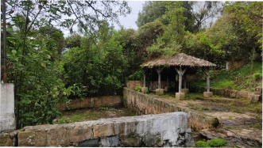
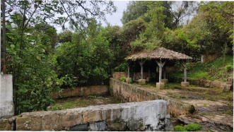

Las Veranitas
El lugar las veranitas es un aljibe de agua pura para beber, o manantial, es una fuente natural de agua fresca que brota del suelo o entre las rocas. Puede ser temporal o permanente y se forma cuando el agua de lluvia o nieve se filtra y emerge en áreas de menor altitud. Estos manantiales suelen aparecer donde el subsuelo impermeable bloquea su paso, obligándola a salir a la superficie.

¡Deseas obtener más información del lugar!

HORARIO
Domingo a Domingo
Todo el dia

 

INFORMACIÓN
Dirección
Chiquinquirá, Boyacá - 2,2 km